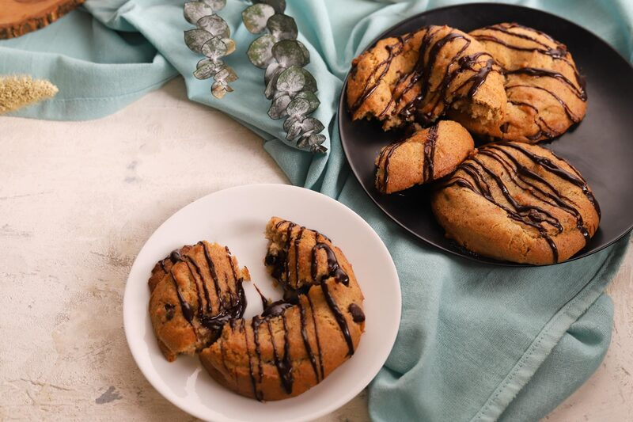
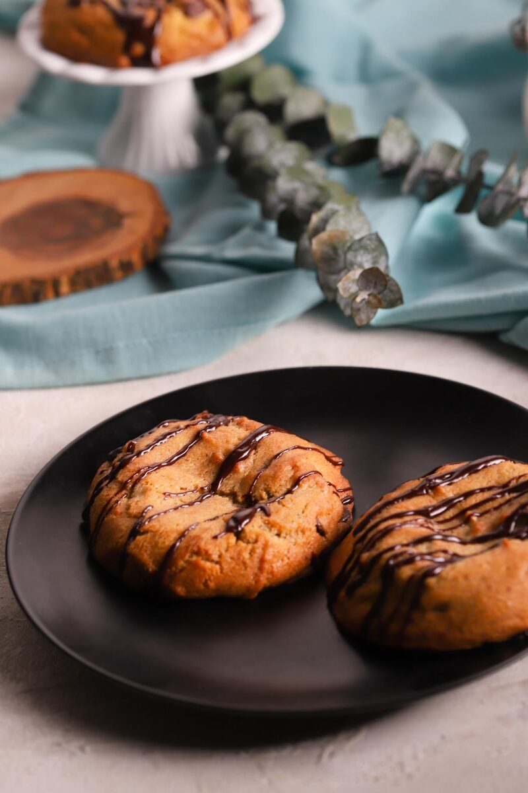
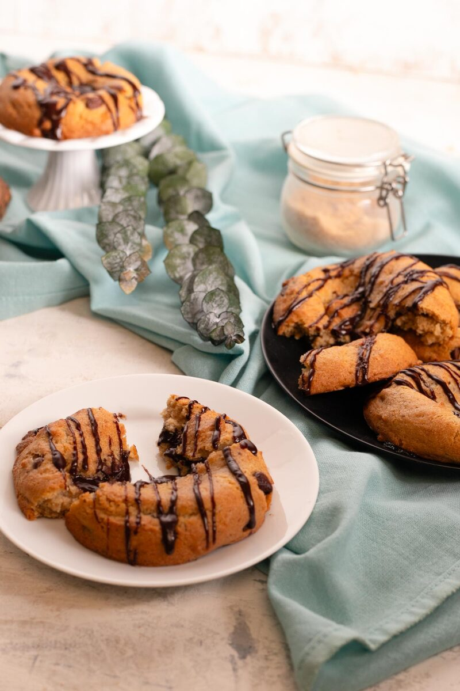

Chocolate Chip Lava Cookies
A molten ganache core sealed inside a thick chocolate chip cookie. No dairy, no gluten, just gooey deliciousness.
Skip to recipe ↓A molten ganache core sealed inside a thick chocolate chip cookie. No dairy, no gluten, just gooey deliciousness.
This is a scaled-down home version of a production formula — 12 cookies at roughly 110 g each. Everything in this recipe is based on weight. Volume measures on a gluten-free blend are the single fastest way to ruin the texture.
How the Gluten-Free Flour Mix Works
Oat flour is the bulk and adds a slightly sweet flavor. It has a soft texture, and it absorbs a lot of water. Rice flour gives the crumb its bite and keeps the cookie from going pasty. Tapioca gives chew and a little stretch. Potato starch is a small percentage, but it holds moisture, which is what keeps the cookie tender the next day instead of sandy.
The binders replace what gluten was doing. Flax hydrated in water builds a gel that mimics egg. Xanthan gives elasticity so the dough can be stretched around a filling without tearing. Psyllium adds water-holding capacity and a bit of tensile strength, which is how you can pinch a seam closed and have it stay closed under oven spring.

Working With Ganache
Ganache is an emulsion with a melting point. Once it drops below roughly body temperature, it sets back up into a solid plug. You want it firm-ish while you seal, and you want it to remelt in the oven. Work with it while it’s warm but not hot.
Chocolate Chip Lava Cookies

Equipment
- Mixing bowls
- Whisk
- Spatula
- Piping bag
- Baking tray
Ingredients
Cookie Dough
- 320g Vegan butter
- 242g Brown sugar
- 89g Cane sugar
- 34g Oat milk
- 34g Water
- 15g Ground flaxseed
- 7g Vanilla
- 210g Oat flour
- 130g Rice flour
- 63g Tapioca flour
- 13g Potato starch
- 1 tsp Baking soda
- 1⅓ tsp Xanthan gum
- ¾ tsp Salt
- ½ tsp Psyllium husk
- 165g Chocolate chips (4k count / small)
Lava Ganache
- 250g Chocolate chunks
- 75g Oat milk
Instructions
- Hydrate the flax. Whisk the flaxseed into the water and let it sit for 10 minutes until it thickens into a gel. This is your egg.
- Cream. Beat the vegan butter with both sugars until light and aerated, 3–4 minutes. Vegan butters run wetter than dairy butter, so make sure to beat it for the full time to build the structure.
- Wet mix. Add the flax gel, vanilla, and oat milk. Mix until fully combined.
- Dry mix. Whisk together the oat flour, rice flour, tapioca, potato starch, baking soda, xanthan, salt, and psyllium in a separate bowl.
- Combine. Add the dry to the wet and mix. This is a recipe you can’t overmix, so go crazy. Don’t let it sit out at room temperature for too long; otherwise, it gets liquidy and difficult to handle. Fold in the chocolate chips.
- Rest. Chill the dough at least 1 hour, ideally overnight. Gluten-free flours hydrate slowly, and dough that hasn’t rested spreads. Cold dough is also far easier to seal.
- Make the ganache. Combine the chocolate chunks and oat milk. Microwave for 30 seconds, stir, and repeat in short bursts until smooth and pourable. Transfer to a piping bag while it’s still fluid — once it cools, it sets solid, and you will not get it through a tip.
- Fill. Portion the dough into 12 pieces (~110 g each). Flatten each into a thick disc in your palm and press a well into the center. Pipe about 20 g of ganache into the well. Fold the edges up and pinch the seam shut until the ganache is completely enclosed. Roll gently to round it back out, seam side down.
- Bake. 400°F for 8–10 minutes depending on how cold they are (mine are near freezing at 8 minutes). The edges should be set and lightly colored. The center will look underdone, but that’s what you want.
- Rest 5 minutes on the tray before moving them. The cookie needs that time to set its structure. Gluten-free crumb is fragile straight out of the oven, and a filled cookie moved too early will tear at the seam.
- Serve warm. If they cool completely, put them in the microwave for 15 seconds to bring back the gooey center.